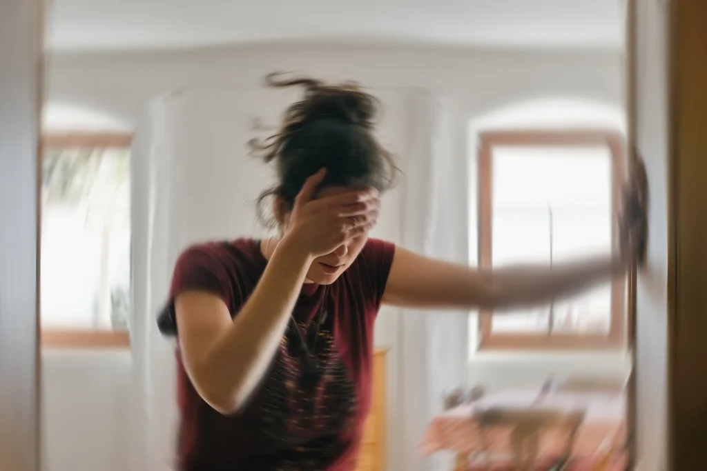

Home›Conditions›Vertigo
Vertigo and dizziness care in Dumont
Some dizziness is neck-related and some belongs with somebody else. Hands-on care in Dumont for the causes we can help with, and a straight answer when it is not one of them.

Vertigo is a symptom, not a diagnosis, and it has several very different causes. Some sit in the inner ear, some are neurological, and some are driven by the joints and muscles of the upper neck. Chiropractic care is relevant to that last group only. The most useful thing a first visit does is work out which kind you have, and say so plainly if it is not ours.
Vertigo is frightening in a way that ordinary pain is not, because the ground stops being reliable. It is also frequently mishandled, by being given one label and one approach regardless of what is actually driving it. Here is a plain-language look at the different causes, where chiropractic care fits, and where it honestly does not.
What causes vertigo?
The most common cause is BPPV, where crystals in the inner ear end up somewhere they should not be and the balance system sends the brain a false signal of movement. That is an inner-ear problem, and the answer to it is a specific repositioning manoeuvre performed by someone trained in it. Other causes are inflammatory, circulatory, medication-related, or neurological.
And then there is the group that overlaps with what we do: dizziness driven by the upper neck. The joints at the base of the skull are dense with the sensors your brain uses to know where your head is in space. When that area is stiff, guarded, or has been injured, the information it sends can conflict with what your eyes and inner ear are reporting, and the result is felt as unsteadiness.
- Dizziness that is worse when you turn or hold your head in one position.
- Unsteadiness that arrived alongside neck pain or stiffness, not on its own.
- Symptoms that started after a whiplash injury or a fall.
- A sense of floating or fogginess rather than the room spinning hard.
- Neck movement that is measurably restricted when we check it.
This one needs saying clearly. Dizziness with new or severe headache, double vision, slurred speech, weakness or numbness, difficulty walking, or fainting is a medical emergency and needs urgent care now, not an appointment with us. New dizziness in someone with heart or circulation problems needs a doctor first. We would rather send you than see you.
How does chiropractic care help with vertigo?
It helps with one kind, and the honest version of that sentence matters more than a broader claim. Where the upper neck is contributing to your unsteadiness, gentle, specific adjustments restore movement to joints that have stiffened, which improves the quality of the position information that region sends your brain. Where the cause is the inner ear or something neurological, that work will not fix it, and we will tell you so.
In practice, if your dizziness has a neck component:
- A careful history and examination first, aimed at working out which kind of dizziness this is.
- Adjustments to restore motion in the upper neck, matched in force to your body.
- Soft-tissue work through the neck and the base of the skull.
- A referral onward, promptly, if the picture points to the inner ear, the circulation, or the brain.
The goal is not a lifetime of visits, and it is not to be the answer to every kind of dizziness. It is to help with the kind we can help with, and get you to the right person quickly for the kind we cannot.
What does care cost, and do you take insurance?
No referral is needed to book, and we are happy to check your benefits for you before your first visit so there are no surprises. Costs depend on your plan and what your neck needs, and we will always walk you through it in plain numbers first.
- No referral needed to book a first visit.
- We verify your benefits for you ahead of time, so you know what to expect.
- Clear, up-front pricing if you are paying out of pocket, with no packages you did not ask for.
We cannot promise a specific outcome or what your insurance will cover, and we cannot promise that your dizziness is the kind we help with; that is what an examination is for. What we can promise is an honest look, a straight answer, and a fast referral if it belongs elsewhere.
About 15% of American adults, some 33 million people, had a balance or dizziness problem in a single year, according to the U.S. National Institute on Deafness and Other Communication Disorders. Dizziness is common, it has many causes, and the useful first step is finding out which one is yours.
Source: U.S. National Institute on Deafness and Other Communication Disorders (NIDCD), Balance Disorders. Figures are from 2008. nidcd.nih.gov
Chiropractic care for Vertigo in Dumont
Chiropractic Care
Spinal Decompression
Cold Laser Therapy
Vertigo FAQ: Dumont
With some kinds, honestly, and not with others. If your dizziness is driven by the upper neck, that is squarely mechanical and it is what we do. If it is BPPV, an inner-ear problem, or something neurological, it is not, and the right answer is a referral rather than a course of care with us. Finding out which is what the first visit is for.
For most people with common, mechanical neck-related dizziness, gentle chiropractic care has a strong safety record, and a careful history and examination come before anything else precisely because dizziness has causes we must rule out first. Low-force options are used for necks that are sensitive. If your picture suggests you should be seen medically first, we will say so.
Some clues point that way: it tracks with neck pain or stiffness, it is worse with certain head positions, it started after a whiplash injury or a fall, and it feels more like unsteadiness than the room spinning violently. Those are clues and not proof, which is why the examination matters.
If your dizziness is new, severe, or comes with any other neurological symptom, yes, and quickly. For long-standing unsteadiness that goes hand in hand with a stiff neck, we are a reasonable place to start, and we will send you on if the picture says we should.
Dizziness with a new or severe headache, double vision, slurred speech, weakness or numbness, trouble walking, chest pain, or fainting is an emergency; call emergency services or go in now. Do not book an appointment and wait. Those are rare, but they are the reason this answer is blunt.
First, find out which kind it is.
Or call us directly: (201) 387-7463
You might also look at
Neck pain & tension
The upper neck that neck-related dizziness comes from.
Whiplash
When the unsteadiness started after a collision.
Headaches & migraines
The headache patterns that often travel with dizziness.